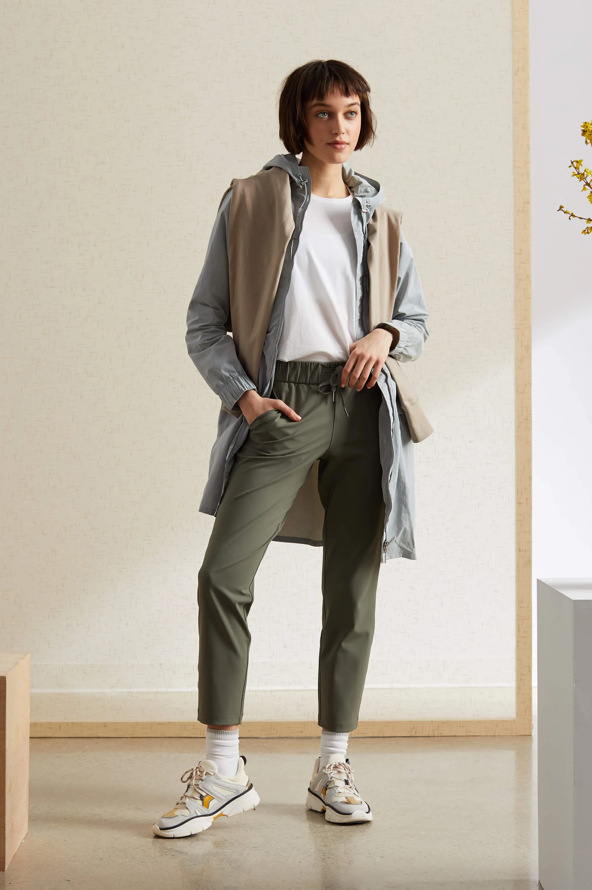
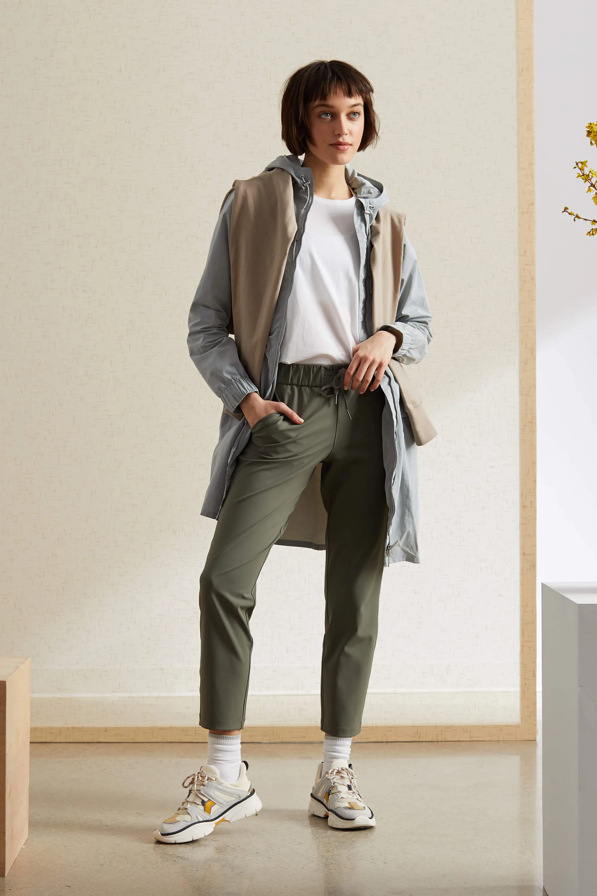

The Psycology of Power Dressing
Power dressing is not just about looking good—it's about harnessing the psychological impact of clothing to enhance confidence, assertiveness, and perceived authority. Understanding the psychology behind power dressing can empower you to strategically use your wardrobe to achieve professional and personal goals.One of the core psychological benefits of power dressing is the boost in confidence it provides. When you wear clothing that makes you feel powerful and in control, you naturally carry yourself with more assurance.
The Foundation: Tailoring and Fit
At the core of power dressing lies impeccable tailoring and fit. A well-cut suit, perfectly tailored trousers, or a structured dress exude professionalism and command attention. Invest in pieces that flatter your silhouette, emphasizing clean lines and a polished appearance. Tailoring isn’t just about size—it’s about how the garment complements your body shape, ensuring comfort and confidence.
The Power Suit: Embodying Strength
The quintessential power suit remains a cornerstone of power dressing. For women, a sharply tailored blazer paired with trousers or a pencil skirt exudes authority and elegance. Choose classic colors like navy, black, or charcoal gray for versatility, or make a statement with bold hues like deep red or emerald green. For men, a well-fitted suit in a timeless pattern like pinstripe or solid colors radiates professionalism.
Color and Confidence
Color plays a pivotal role in power dressing. While traditional neutrals convey authority, strategic use of color can amplify your message. Opt for shades that resonate with your personality and the occasion—deep blues evoke trust, while reds signify boldness and energy. Experiment with accessories like ties, scarves, or statement jewelry to inject personality while maintaining a professional demeanor.
Attention to Detail: Accessories and Grooming
Accessories are the finishing touches that elevate your ensemble from ordinary to outstanding. Choose quality leather goods—briefcases, handbags, belts—that complement your outfit without overwhelming it. Pay attention to grooming; well-maintained hair, manicured nails, and polished shoes underscore your commitment to professionalism.
Conclusion: Embrace Your Power
In essence, power dressing transcends fashion—it's about embodying confidence, authority, and authenticity. Whether you're dressing for a pivotal career moment or a significant event, your attire should reflect your inner strength and ambition. Invest in pieces that make you feel empowered and ready to conquer any challenge. Remember, the essence of power dressing lies not just in what you wear, but how you wear it—with poise, purpose, and passion. Join the movement of those who harness the transformative power of clothing to elevate their presence and make a lasting impact. Embrace the art of power dressing, and let your wardrobe reflect the powerful, dynamic individual you are.


 
